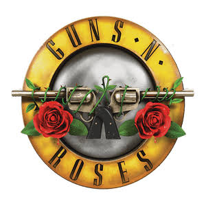

Seria o Guns, a maior banda dos anos 80 na atualidade?
Por: Camila Correia Ramos
Se você caminhar por qualquer festival de música ao redor do mundo — seja no calor escaldante do Rock in Rio, nos palcos sagrados do Coachella ou em estádios lotados na Europa —, uma cena se repete com precisão cirúrgica: adolescentes com camisetas vintage de Slash, pais cantando a plenos pulmões ao lado de filhos que nem haviam nascido em 1987, e uma energia eletrizante que desafia o próprio tempo. Enquanto muitas bandas da década de 80 viraram peças de museu ou relíquias nostalgicas limitadas a tocar em pubs, o Guns N' Roses desafiou todas as probabilidades. Hoje, na atualidade, eles não são apenas uma lembrança do passado: eles são a maior banda dos anos 80 ainda em atividade.